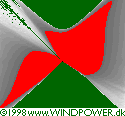
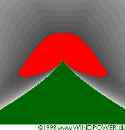
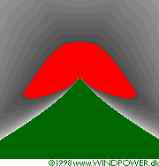

Refining Shadow
Calculations for Wind Turbines
Random
Rotor Direction (Random Azimuth)
 It is very unlikely that the wind
and thus the rotor will track the sun in practice. We may therefore get
a more realistic result if we modify our calculations by assuming that the rotor can assume any position
at any time. In the small picture to the far right you can see a situation
where the rotor is directly facing the sun. The tiny white dot near the
bottom right is the centre of the wind turbine tower.
It is very unlikely that the wind
and thus the rotor will track the sun in practice. We may therefore get
a more realistic result if we modify our calculations by assuming that the rotor can assume any position
at any time. In the small picture to the far right you can see a situation
where the rotor is directly facing the sun. The tiny white dot near the
bottom right is the centre of the wind turbine tower.
 Now, let us assume that we yaw the rotor out of its position by one
degree, take a snapshot of the shadow image, then yaw it by another degree,
take another snapshot etc., until we have done a full 360 degree turn. Then
we overlay all our 360 snapshots, and what we end up with will look similar
to the small image to the left: The centre will get the most of the shadow,
but as we move towards the outer edge (where the vertical edges of the rotor
disc cast their shadows) the overall shadow intensity will decrease.
Now, let us assume that we yaw the rotor out of its position by one
degree, take a snapshot of the shadow image, then yaw it by another degree,
take another snapshot etc., until we have done a full 360 degree turn. Then
we overlay all our 360 snapshots, and what we end up with will look similar
to the small image to the left: The centre will get the most of the shadow,
but as we move towards the outer edge (where the vertical edges of the rotor
disc cast their shadows) the overall shadow intensity will decrease.
 Shadow casting is on average reduced to 63% of the worst case results,
if you assume a random rotor direction. Ideally, we should have a wind rose, (preferably hourly for each day or
month) to do an exact calculation.
Shadow casting is on average reduced to 63% of the worst case results,
if you assume a random rotor direction. Ideally, we should have a wind rose, (preferably hourly for each day or
month) to do an exact calculation.
Fixed
Rotor Direction (Fixed Azimuth)
 In practice the wind turbine rotor will follow the wind direction
(if the wind speed is above the cut
in speed). This image shows the shape of an area (in red) which gives
10 hours or more of shadows per year at 55° Northern latitude with the
rotor yaw (azimuth)
fixed at an angle of -45 degrees (i.e. with the wind permanently coming
from the Southwest or Northeast). As you can see, there will be almost no
shadows at an angle of +45 degrees, i.e. in the direction parallel to the
rotor plane.
In practice the wind turbine rotor will follow the wind direction
(if the wind speed is above the cut
in speed). This image shows the shape of an area (in red) which gives
10 hours or more of shadows per year at 55° Northern latitude with the
rotor yaw (azimuth)
fixed at an angle of -45 degrees (i.e. with the wind permanently coming
from the Southwest or Northeast). As you can see, there will be almost no
shadows at an angle of +45 degrees, i.e. in the direction parallel to the
rotor plane.
 Shadow casting is typically reduced to around 62% of the worst case
results, if we assume a fixed rotor direction.
Shadow casting is typically reduced to around 62% of the worst case
results, if we assume a fixed rotor direction.
Actual
Rotor Direction (Wind Rose)
Usually we will already have a wind rose with a frequency distribution of
the wind in the different directions of the compass when we are planning
a wind turbine site. Using that information, we may calculate a more exact
shadow picture. In the case of our test example, Copenhagen, shadows are
reduced to some 64 per cent of the comparable worst case value.
Turbine
Operating Hours
The rotor will not be running all the time, so we may multiply the number
of minutes of shadow flicker by a factor of typically 0.75, depending on
the local wind climate, (and ideally using the correct factor for daytime
during each month).
Actual
Sunshine Hours
When studying shadows, we should only count the fraction of the time when
the sun is actually shining brightly, ideally using the correct fraction
for each hour of the day during the year. In 1853 the first reliable sunshine
recording device was invented (and improved in 1879), which means that in
many parts of the world the meteorological institutes have very accurate
long term statistics on the number of hours of bright sunshine during the
year.
 The number of bright sunshine hours varies with the geographical location
and the season (summer or winter). We have included data for three Danish
sites (Christiansø, Copenhagen, and Viborg) where the number of sunshine
hours vary from 44 to 40, and 36 per cent of the time.
The number of bright sunshine hours varies with the geographical location
and the season (summer or winter). We have included data for three Danish
sites (Christiansø, Copenhagen, and Viborg) where the number of sunshine
hours vary from 44 to 40, and 36 per cent of the time.
Combining
Turbine operating hours, Actual Rotor Direction, and Actual Sunshine Hours
If we use both turbine operating hours, the actual rotor direction, and
the actual bright sunshine hours we get a result (in the case of Denmark)
which is some 18 per cent of the worst case assumption, using 75% operating
hours in both cases. (The percentages given above are the results of simulations
for Copenhagen on a 720 by 720 metre square with a turbine in the centre
with 43 m rotor diameter and 50 m hub height).
 The two images below compare a worst case simulation (with 75% operating
hours) with an actual simulation for Copenhagen (also 75% operating hours)
using both sunshine and wind statistics. The red area is the zone with 30
hours of shadow or more per year. Each map represents 720 by 720 metres.
The two images below compare a worst case simulation (with 75% operating
hours) with an actual simulation for Copenhagen (also 75% operating hours)
using both sunshine and wind statistics. The red area is the zone with 30
hours of shadow or more per year. Each map represents 720 by 720 metres.
 The important conclusion of this simulation is that actual sunshine
hours play a very important role in diminishing the amount of shadows north
of the turbine (in the Northern hemisphere). The reason why this is important
is that there are very few hours of sunshine when the sun is low in the
sky to the south during winter.
The important conclusion of this simulation is that actual sunshine
hours play a very important role in diminishing the amount of shadows north
of the turbine (in the Northern hemisphere). The reason why this is important
is that there are very few hours of sunshine when the sun is low in the
sky to the south during winter.
 


|
Back | Home | Forward |
© Copyright 1998 Soren Krohn. All rights reserved.
Updated 26 September 2000
http://www.windpower.org/tour/env/shadow/shadowr.htm